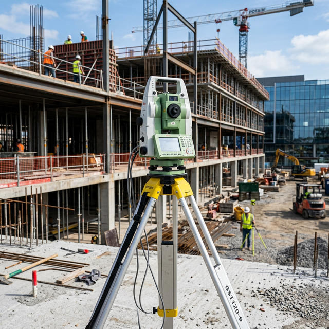
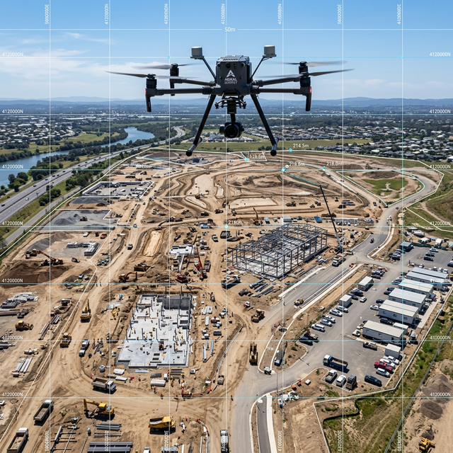
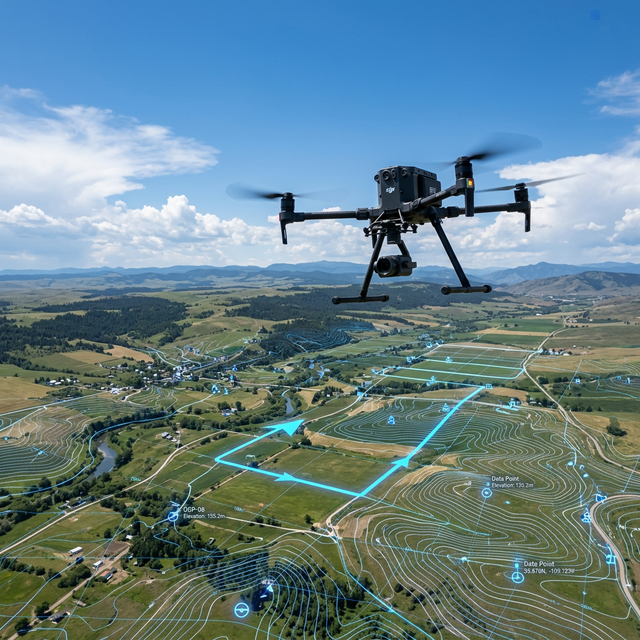

Land Survey
Precise measurement and mapping of land parcels for ownership, planning and legal purposes.

Our Services
NDSE services are organised into two divisions. Select a category to see its meaning and applications.
What We Offer
Comprehensive survey engineering solutions with extreme precision and cutting-edge technology.
We provide a wide range of surveying services across Tamil Nadu, Kerala, Delhi and All India, leveraging cutting-edge technology to deliver accurate results.
Precise measurement and mapping of land parcels for ownership, planning and legal purposes.
.jpeg)
Accurate determination and marking of legal property boundaries for dispute-free ownership.

Complete property boundary and area surveys for real estate transactions and legal filings.

Measurement and mapping of agricultural land for fragmentation, sale and legal records.

Division of land parcels into multiple plots as per local planning and approval norms.
.jpeg)
On-site dimensional measurement for construction, renovation and audit requirements.
.jpeg)
Physical demarcation of land boundaries using permanent monuments and GPS coordinates.
Differential GPS surveying delivering centimetre-level accuracy for large-scale projects.
.jpeg)
High-precision GPS technology for accurate coordinate capture and land measurement.
.jpeg)
Electronic distance measurement and angle calculations using Total Station instruments.

Establishment of primary geodetic control points as the reference framework for large projects.
.jpeg)
Detailed mapping of terrain features, elevations and contours for project planning.
Mapping of ground elevation contours for cut-fill analysis, drainage and grading plans.
Accurate vertical elevation data collection for construction and flood risk assessments.
.jpeg)
Marking residential and commercial plot layouts as per approved plans and regulatory norms.

Precise on-site marking of building corners, columns and structural elements.

Complete survey support throughout the construction lifecycle ensuring accurate execution.

Comprehensive surveys for civil and structural engineering design and project execution.
Verification surveys of completed structures ensuring they match approved design drawings.

Survey of linear routes for road, rail, canal, and pipeline infrastructure projects.

Horizontal and vertical alignment surveys for new and existing road infrastructure.
Detailed surveys for national and state highway planning, design and construction.
Accurate survey services for railway track alignment, corridors and station planning.

Survey of irrigation canals, waterways and drainage channels for hydraulic engineering.
Precise route and alignment surveys for oil, gas and water pipeline projects.
Geospatial data capture, analysis and digital map creation for planning and administration.
UAV-based aerial photography and photogrammetry for rapid large-area mapping.
Survey support for industrial estates, plant layouts, factory expansions and compliance checks.
.jpeg)
Specialised surveys for mining areas, quarry volume estimation and land use mapping.
Underwater depth mapping and water body surveys for ports, dams and marine projects.
High-resolution drone mapping, topographic analysis, and LiDAR solutions.
Seamless execution of legal documentation, government clearances, and statutory property approvals with extreme precision.
Project Management Consultancy for rapid tracking of bureaucratic processes, statutory audits, and compliance validations.
Expert architectural drafting and meticulous building plans tailored for immediate statutory clearance.
End-to-end robust construction services, from foundational engineering to premium architectural finishing.
Strategic property positioning, visual site representations, and comprehensive digital marketing to attract investors.
Supplying skilled technical manpower and reliable labour contracts for large-scale engineering, construction, and surveying projects.
Thorough structural audits, legal document verification, and engineering assessments for complete site assurance.
Our Services
Share your site location, area and drawings. Our team will advise on the right survey or marking method.